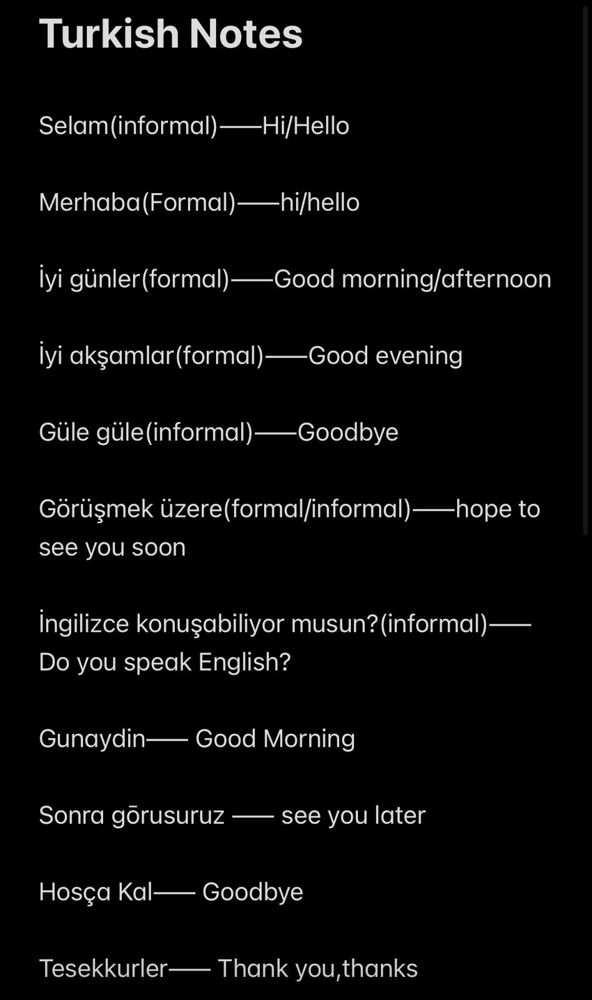
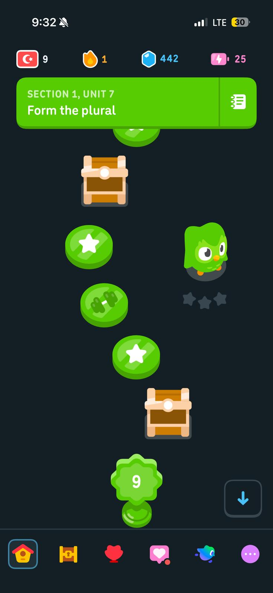

About my Achievement
I decided to learn Turkish because I was in love with the culture and the language. I wanted to connect with the people there so I decided to give it a go and I loved it. First few months were just me trying to watch turkish series and to catch some common phrases. Afterwards, I decided to attennd online classes and also learnt all about the grammers and pronunciation. I used apps and short lessons. This site summarizes the skills I learnt.
Skills & Progress
Speaking
70%
Listening
80%
Reading
60%
Timeline
Month 1
Started basics: alphabet, greetings, and common phrases.
Month 3
Practiced with language app and joined online 1 to 1 classes.
Month 5
Held a 10-minute conversation with a native speaker and understood simple news headlines.
Month 8
Completed a beginner course and created this project to celebrate my progress.
Gallery


Contact
If you'd like to practice Turkish with me, email: afeenkhalid03@gmail.com